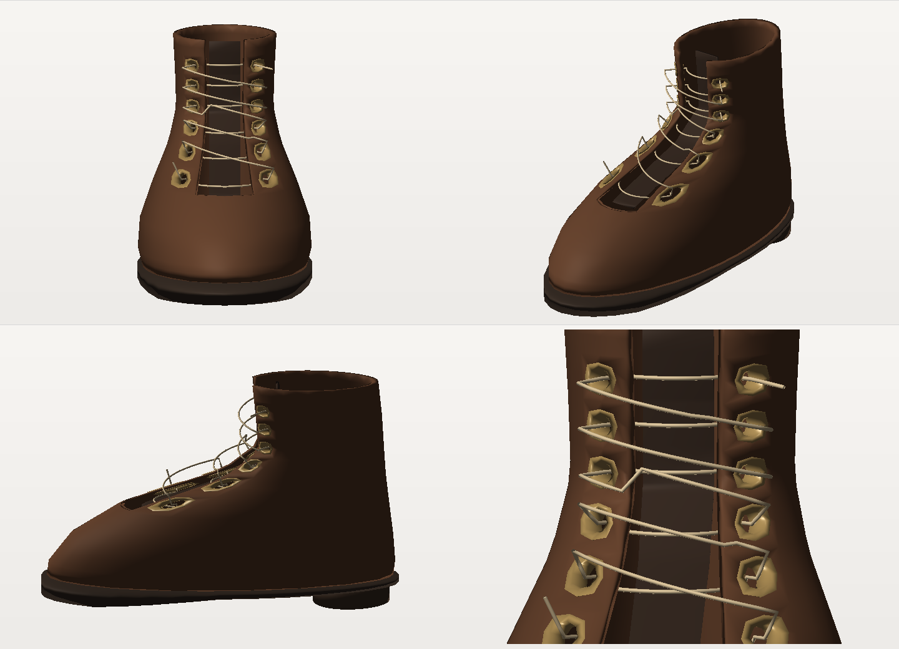
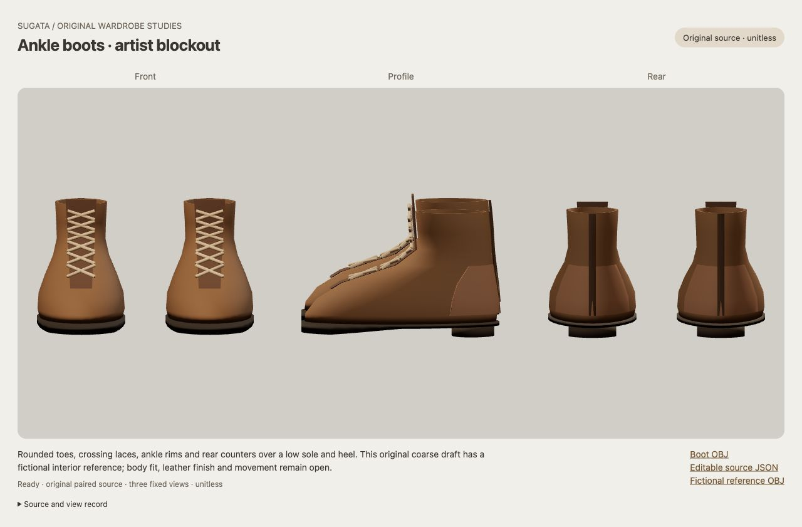

Visual wardrobe boardOpenings the lace can pass through
A single editable boot construction study: twelve material ports, matched brass sleeves, a separate tongue and one continuous lace. The original accepted paired boot stays available below.
Construction readability only. Stiff projecting lace loops and faceted hardware remain coarse. Finished footwear, soft lace behavior, fit, leather and motion remain open. This study stays isolated from the default looks.

New first packet, unchanged: top-left front; top-right elevated three-quarter; bottom-left side; bottom-right predeclared port detail. Root and independent critic accept the limited construction reading. The wire-like route and raised polygonal rims remain visible limitations.
The retained paired blockout
These are different renderers, cameras and arrangements. Compare the declared construction features; this is not a registered before/after quality or fit measurement.

Original paired artist blockout, October 5. It remains accepted within its earlier coarse, unitless limits. The new study retains only its left sole, heel and invisible fictional reference.
Import note: the OBJ includes a separate left.nominal fictional reference group. Hide that group to inspect the intended visible study; visibility is recorded in JSON. This reference is not an anatomical last.
Root final reading and initial concern · Independent image review · Exact run and hashes
One first source/data/render invocation. No retake, geometry tuning or accepted/default replacement. Full character, expression, wardrobe, representation, coupled-fit, motion, performance, VTuber and Mii goals remain open.